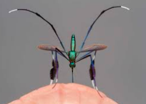

Photography

Photography is a way of feeling, touching, and of loving. What you have caught on film is captured forever.
Photography is the art, application, and practice of creating durable images. It is employed in many fields of science, manufacturing (e.g., photolithography), and business, as well as its more direct uses for art, film and video production, recreational purposes, hobby, and mass communication.
Read more
In order to do good photography one needs the following items:
- Camera

A good camera device for use
- Lenses
The quality of lenses used determine the quality of the pcitures produced.
No matter how good the quality, there will be lens aberrations of one kind or another.
- Editing software
Through editing, you can make your already stunning photos even more perfect by adjusting metrics like exposure, white balance and color.
Plus, editing your photos helps to reduce the size of your image files.
Read more
Other requirements include;
- Tripod - for stability of the camera during photography
- Lighting - proper lighting is essential for quality photos especially indoors
- Backdrops - different ackgrounds achieve different photo environments